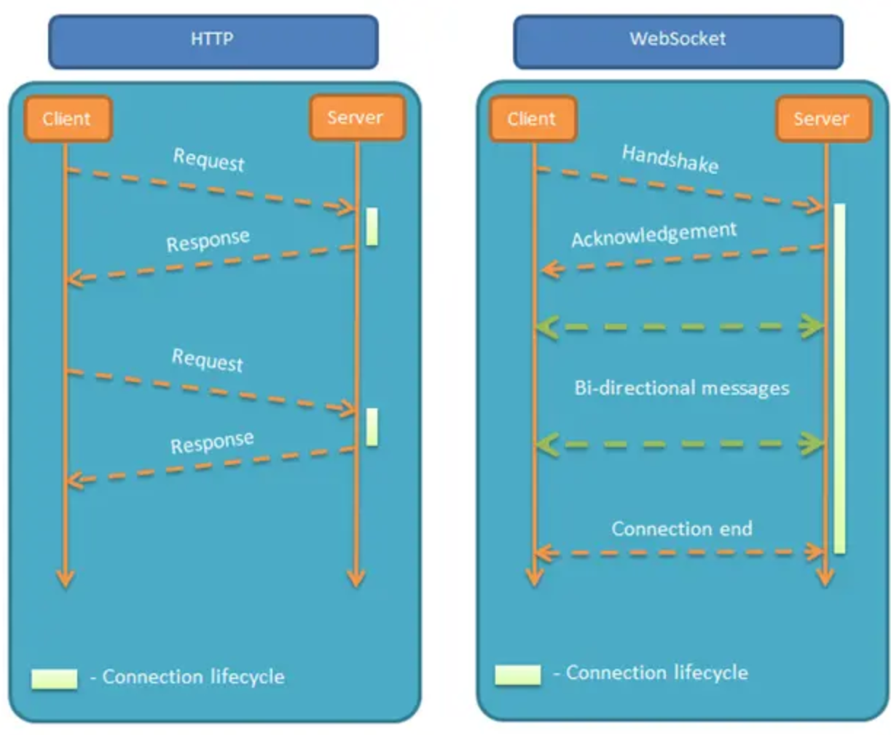
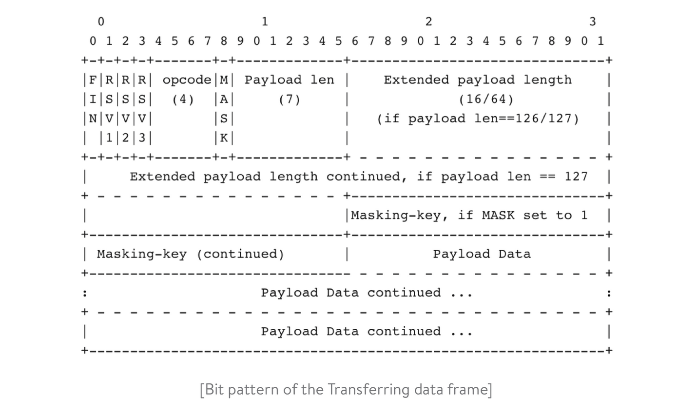

WebSocket简介
服务器可以主动向客户端推送信息，客户端也可以主动向服务器发送信息，是真正的双向平等对话，属于服务器推送技术的一种。
（1）建立在 TCP 协议之上，服务器端的实现比较容易。
（2）与 HTTP 协议有着良好的兼容性。默认端口也是80和443，并且握手阶段采用 HTTP 协议，因此握手时不容易屏蔽，能通过各种 HTTP 代理服务器。
（3）数据格式比较轻量，性能开销小，通信高效。
（4）可以发送文本，也可以发送二进制数据。
（5）没有同源限制，客户端可以与任意服务器通信。
（6）协议标识符是ws（如果加密，则为wss），服务器网址就是 URL。
请求示例
-
客户端:
GET /chat HTTP/1.1 Host: server.example.com Upgrade: websocket Connection: Upgrade Sec-WebSocket-Key: x3JJHMbDL1EzLkh9GBhXDw== Sec-WebSocket-Protocol: chat, superchat Sec-WebSocket-Version: 13 Origin: http://example.com -
服务端：
HTTP/1.1 101 Switching Protocols Upgrade: websocket Connection: Upgrade Sec-WebSocket-Accept: HSmrc0sMlYUkAGmm5OPpG2HaGWk= Sec-WebSocket-Protocol: chat
观察报文中的参数websocket像是http的升级，但是准确来说他不是建立在http之上的，只是通过http握手之后进行服务的升级
建立连接的步骤建立
- 客户端发起WebSocket连接：客户端通过HTTP协议向服务器发起WebSocket连接请求。这是一个普通的HTTP GET请求，但包含特定的WebSocket头信息，例如升级协议（Upgrade）为"websocket"、连接方式（Connection）为"Upgrade"，以及一个随机生成的Sec-WebSocket-Key头部。客户端还可以附加其他WebSocket特定的头部信息。
- 服务器接受WebSocket连接请求：服务器接收客户端的HTTP连接请求，并检查头部信息以确保其包含了WebSocket相关的信息。如果一切正常，服务器将向客户端发送HTTP 101切换协议（HTTP 101 Switching Protocols）响应，表示接受了WebSocket连接。
- WebSocket握手：在接受WebSocket连接后，服务器和客户端进行握手。服务器会计算客户端发送的Sec-WebSocket-Key的哈希值，并与一个固定的GUID（“258EAFA5-E914-47DA-95CA-C5AB0DC85B11”）一起计算SHA-1哈希值，然后将结果转换为Base64编码。这个Base64编码的值将作为响应头部Sec-WebSocket-Accept返回给客户端，以证明WebSocket连接已成功建立。
- WebSocket连接建立：一旦客户端收到HTTP 101切换协议响应，并验证Sec-WebSocket-Accept头部，连接被视为成功建立。此时，WebSocket连接可以用于双向通信。
传输数据帧
握手成功完成后，您的应用程序可以从客户端读取数据或向客户端写入数据。WebSocket 规范定义了的一个客户机和服务器之间使用的特定帧格式。这是框架的位模式：

http和websocket
共同点
- 都是基于tcp协议的，所以都是可靠传
- 都在应用层
不同
- websocket是双向通讯的协议，模拟socket协议，可以双向发送和接受信息，而http是单向的
- 都需要握手建立连接，但是http每次都需要进行握手，而websocket在握手之后再发送数据无需进行握手，
- websocket没有header
websocket 握手过程
- 浏览器和服务端建立tcp三次握手，这是通讯的基础，传输控制层，若失败了就不继续了
- tcp握手完成后，浏览器通过http协议向服务端发送websocket支持的版本号等信息（开始前的http握手）
- 服务器收到客户端的握手请求后，同样采用http协议回馈数据。
- 当收到了连接成功的信息后，通过tcp通道进行传输通讯
在GO语言使用websocket
要基于 Go 语言内置的 net/http 库编写 WebSocket 服务器，你需要：
- 发起握手
- 从客户端接收数据帧
- 发送数据帧给客户端
- 关闭握手
建立发起握手
首先，让我们创建一个带有 WebSocket 端点的 HTTP 处理程序：
// HTTP server with WebSocket endpoint
func Server() {
http.HandleFunc("/", func(w http.ResponseWriter, r *http.Request) {
ws, err := NewHandler(w, r)
if err != nil {
// handle error
}
if err = ws.Handshake(); err != nil {
// handle error
}
…
然后初始化 WebSocket 结构。
初始握手请求始终来自客户端。服务器确定了 WebSocket 请求后，需要使用握手响应进行回复。
请记住，你无法使用 http.ResponseWriter 编写响应，因为一旦开始发送响应，它将关闭其基础的 TCP 连接（这是 HTTP 协议的运行机制决定的，发送响应后即关闭连接）。
因此，您需要使用 HTTP 劫持 (hijack)。通过劫持，可以接管基础的 TCP 连接处理程序和 bufio.Writer。这使可以在不关闭 TCP 连接的情况下读取和写入数据。
// NewHandler initializes a new handler
func NewHandler(w http.ResponseWriter, req *http.Request) (*WS, error) {
hj, ok := w.(http.Hijacker)
if !ok {
// handle error
} .....
}
要完成握手，服务器必须使用适当的头进行响应。
// Handshake creates a handshake header
func (ws *WS) Handshake() error {
hash := func(key string) string {
h := sha1.New()
h.Write([]byte(key))
h.Write([]byte("258EAFA5-E914-47DA-95CA-C5AB0DC85B11"))
return base64.StdEncoding.EncodeToString(h.Sum(nil))
}(ws.header.Get("Sec-WebSocket-Key"))
.....
}
客户端发起 WebSocket 连接请求时用的 Sec-WebSocket-key 是随机生成的，并且是 Base64 编码的。接受请求后，服务器需要将此密钥附加到固定字符串。假设秘钥是 x3JJHMbDL1EzLkh9GBhXDw==。在这个例子中，可以使用 SHA-1 计算二进制值，并使用 Base64 对其进行编码。得到 HSmrc0sMlYUkAGmm5OPpG2HaGWk=。然后使用它作为 Sec-WebSocket-Accept 响应头的值。